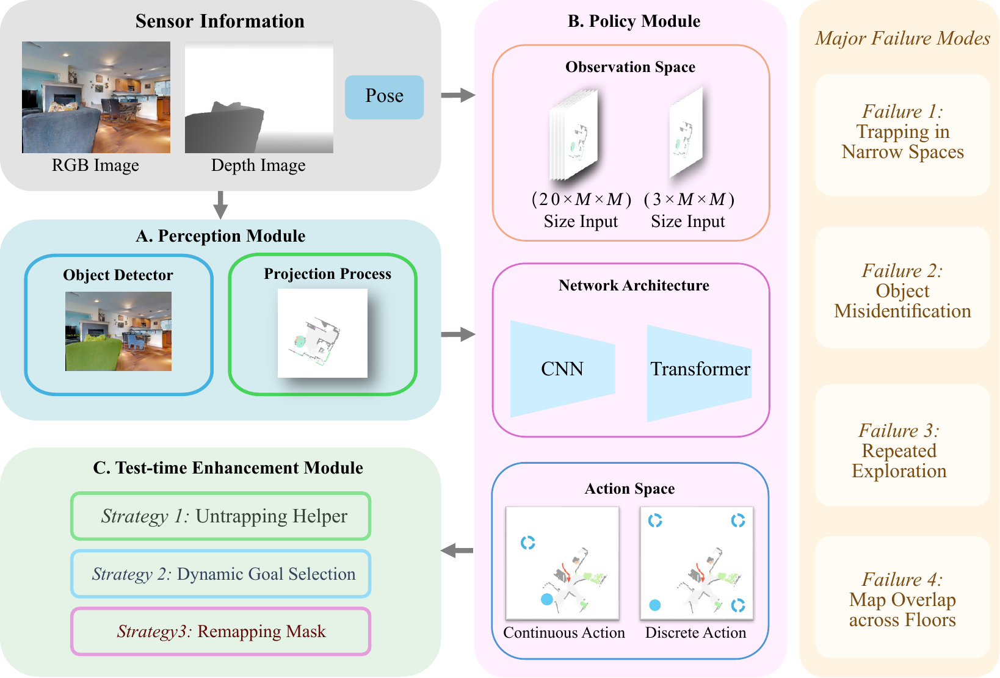
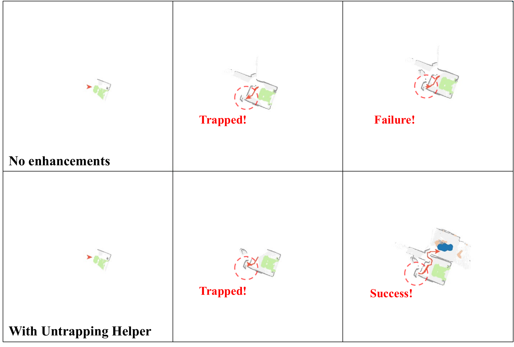
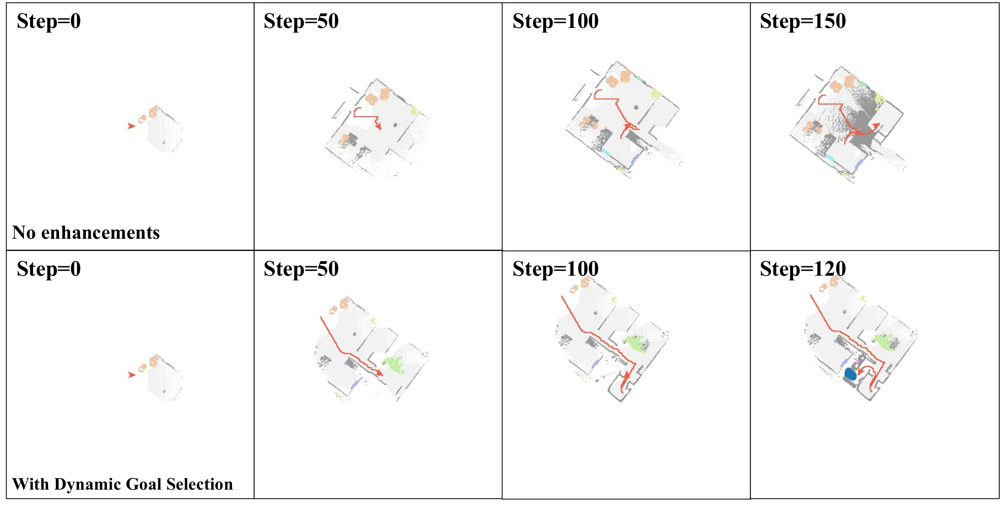
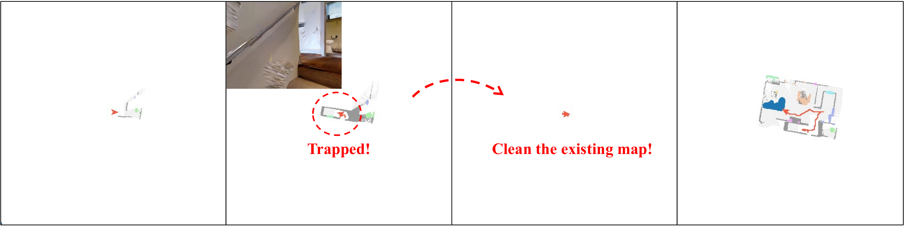
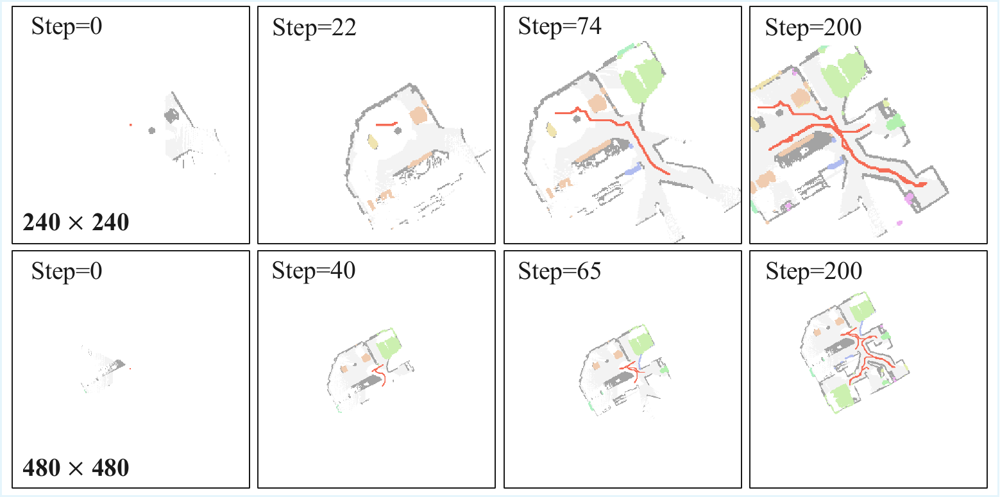

Object-Goal Navigation (ObjectNav) is a key capability for deploying mobile robots in everyday environments such as homes, schools, and workplaces. In this task, an agent must locate an instance of a target object category in previously unseen environments using only onboard perception, requiring the integration of semantic understanding, spatial reasoning, and long-horizon planning.
Reinforcement learning (RL) has become a dominant paradigm for ObjectNav, yet modern systems involve numerous design choices across perception modules, policy architectures, and inference-time strategies. The relative impact of these components, however, remains poorly understood. In this work, we present a large-scale empirical study of modular RL-based ObjectNav systems. We decompose the navigation pipeline into three key components — perception, policy, and test-time enhancement — and conduct extensive controlled experiments to analyze their individual contributions.
Our results suggest that improvements in perception quality and test-time strategies often yield larger performance gains than policy improvements alone. Motivated by these findings, we introduce a unified framework for systematically studying modular ObjectNav systems and build an enhanced system that achieves state-of-the-art performance on the Gibson benchmark, improving SPL by 6.6% and success rate by 2.7% over prior methods. We also introduce a human expert baseline, achieving 98% success, highlighting the significant gap between current RL agents and human-level navigation. Finally, we provide practical insights and design recommendations for each module to help guide future research.
We follow the natural pipeline of robot navigation and decompose a typical RL-based approach into three core modules, then study each under controlled settings.

A. Perception: RGB-D and pose are fused into a top-down semantic map. B. Policy: the map and auxiliary inputs guide action prediction. C. Test-Time Enhancement: plug-and-play strategies applied at evaluation to boost performance without retraining.
An object detector extracts semantics from RGB images, fused with depth into a top-down semantic map. We study the object detector, map augmentation, and map size.
An RL policy infers a long-term goal from the map. We study the observation space, action space, network architecture, and reward design.
Training-free strategies that correct common failures: an untrapping helper, dynamic goal selection, and a remapping mask for multi-floor overlap.
The capability of the perception module has a substantial impact on overall navigation performance — a finetuned detector alone can lift Success Rate by nearly 7%.
Often dismissed as engineering details, plug-and-play test-time strategies provide significant improvements at deployment — with no extra training.
With a unified configuration for perception and test-time strategies, differences between policy designs can finally be measured reliably and fairly.
We isolate each design choice under controlled settings and report standard (SR, SPL, DTS) and dynamic-timestep (D-SR, D-SPL, D-DTS) metrics. Full tables are in the paper.
| Pol. | Detector | Size | Aug. | SR % | SPL % | DTS m | D-SR % | D-SPL % | D-DTS m |
|---|---|---|---|---|---|---|---|---|---|
| C | MRCNN | 480 | ✓ | 77.7 | 40.9 | 1.047 | 61.6 | 38.6 | 1.641 |
| C | RedNet | 480 | ✓ | 80.9 | 43.9 | 0.851 | 65.5 | 41.6 | 1.488 |
| C | RF-DETR-Seg | 480 | ✓ | 77.6 | 44.2 | 0.991 | 64.1 | 42.4 | 1.512 |
| C | RF-DETR+SAM2 | 480 | ✓ | 77.1 | 44.7 | 1.112 | 63.8 | 42.6 | 1.669 |
| C | YOLO11-XL | 480 | ✓ | 76.0 | 42.6 | 1.147 | 62.8 | 40.8 | 1.668 |
| C | FT-MRCNN | 480 | ✓ | 83.8 | 47.6 | 0.800 | 69.5 | 45.3 | 1.425 |
| C | FT-MRCNN | 240 | ✓ | 78.7 | 45.2 | 1.135 | 64.8 | 43.1 | 1.658 |
| C | FT-MRCNN | 480 | ✗ | 83.3 | 44.2 | 0.771 | 63.5 | 41.2 | 1.727 |
| F | MRCNN | 480 | ✓ | 71.2 | 38.5 | 1.428 | 49.1 | 33.5 | 2.086 |
| F | RedNet | 480 | ✓ | 75.0 | 40.9 | 1.114 | 53.1 | 35.7 | 1.876 |
| F | FT-MRCNN | 480 | ✓ | 79.9 | 45.8 | 0.892 | 57.2 | 39.7 | 1.714 |
| F | RF-DETR-Seg | 480 | ✓ | 72.9 | 40.3 | 1.183 | 53.6 | 36.6 | 1.871 |
| F | RF-DETR+SAM2 | 480 | ✓ | 72.8 | 43.7 | 1.416 | 53.6 | 39.2 | 2.006 |
| F | YOLO11-XL | 480 | ✓ | 69.5 | 39.0 | 1.514 | 49.8 | 34.6 | 2.106 |
| F | FT-MRCNN | 240 | ✓ | 79.6 | 43.6 | 1.033 | 61.0 | 40.1 | 1.742 |
| F | FT-MRCNN | 480 | ✗ | 78.0 | 42.5 | 1.000 | 53.4 | 36.3 | 1.791 |
Takeaway: a Gibson-finetuned detector (FT-MRCNN) gives a clear, consistent boost across all metrics — perception quality propagates directly to navigation. C = Corner Goal Policy, F = Frontier-Based Policy.
| Obs. Space | Action Space | Network | Reward | SR % | SPL % | DTS m | D-SR % | D-SPL % | D-DTS m |
|---|---|---|---|---|---|---|---|---|---|
| Standard | Discrete | Transformer | Type 2 | 83.4 | 43.8 | 0.717 | 66.3 | 41.0 | 1.501 |
| Compressed | Discrete | Transformer | Type 2 | 83.8 | 43.3 | 0.685 | 65.8 | 40.3 | 1.572 |
| Compressed | Continuous | Transformer | Type 2 | 84.4 | 48.2 | 0.741 | 69.6 | 45.8 | 1.415 |
| Compressed | Discrete | CNN | Type 2 | 83.7 | 43.3 | 0.706 | 65.8 | 40.5 | 1.548 |
| Compressed | Discrete | Transformer | Type 1 | 85.2 | 45.8 | 0.664 | 67.8 | 43.0 | 1.346 |
Takeaway: under a unified perception + test-time configuration, policy choices show smaller margins. A continuous action space helps SPL, a compressed observation matches the standard one at >6× smaller size, and CNN vs. Transformer backbones perform comparably.
| Policy | Untrapping | Dynamic Goal | Remapping | SR % | SPL % | DTS m | D-SR % | D-SPL % | D-DTS m |
|---|---|---|---|---|---|---|---|---|---|
| RL (Continuous) | ✗ | ✓ | ✓ | 81.3 | 47.3 | 0.741 | 69.1 | 45.3 | 1.509 |
| RL (Continuous) | ✓ | ✓ | ✗ | 82.6 | 48.0 | 0.817 | 70.1 | 45.9 | 1.384 |
| RL (Continuous) | ✓ | ✓ | ✓ | 84.4 | 48.2 | 0.741 | 69.6 | 45.8 | 1.415 |
| RL (Discrete) | ✓ | ✗ | ✓ | 83.8 | 43.3 | 0.685 | 65.8 | 40.3 | 1.572 |
| RL (Discrete) | ✓ | ✓ | ✓ | 85.3 | 47.5 | 0.632 | 69.8 | 44.9 | 1.397 |
Takeaway: stacking training-free test-time strategies yields clear gains — e.g., dynamic goal selection lifts the discrete policy from 83.8% to 85.3% SR — without any retraining.

Untrapping helper — escaping stuck situations in narrow spaces.

Dynamic goal selection — avoiding redundant, repeated exploration.

Remapping mask — handling multi-floor map overlap from undetected staircases.

A navigation rollout of the enhanced agent reaching the target object.
Guided by our analysis, the best-configured system outperforms prior methods on the Gibson benchmark. A human-expert baseline — researchers under the same setup and observations — exposes a large remaining gap.
| Method | SR % ↑ | SPL % ↑ | DTS m ↓ |
|---|---|---|---|
| SemExp | 65.7 | 33.9 | 1.47 |
| SemExp* | 71.7 | 39.6 | 1.39 |
| PONI | 73.6 | 41.0 | 1.25 |
| 3D-aware | 74.5 | 42.1 | 1.16 |
| FSE | 71.5 | 36.0 | 1.35 |
| SGM | 78.0 | 44.0 | 1.11 |
| L3MVN | 76.8 | 38.8 | 1.01 |
| NaviFormer | 82.6 | 40.9 | 0.76 |
| T-Diff | 79.6 | 44.9 | 1.00 |
| HOZ++ | 78.2 | 44.9 | 1.13 |
| Ours (continuous) | 84.4 | 48.2 | 0.74 |
| Human Experts | 98.0 | 53.3 | 0.26 |
Comparisons on Gibson (continuous-action policy shown). Our best configuration outperforms all prior methods; the discrete-action variant reaches 85.3% SR / 47.5% SPL. Human Experts reach 98% success, underscoring the algorithmic gap toward human-level navigation.
@inproceedings{wang2026whatmatters,
title = {What Matters in RL-Based Methods for Object-Goal Navigation?
An Empirical Study and A Unified Framework},
author = {Wang, Hongze and Sun, Boyang and Xing, Jiaxu and Yang, Fan and
Hutter, Marco and Shah, Dhruv and Scaramuzza, Davide and Pollefeys, Marc},
booktitle = {European Conference on Computer Vision (ECCV)},
year = {2026},
}